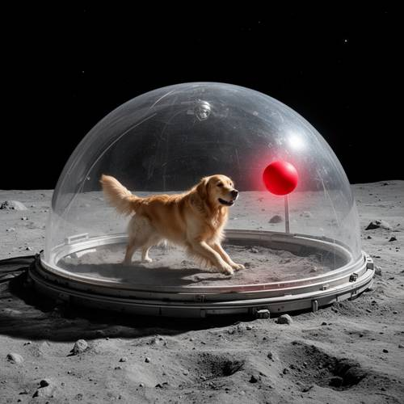
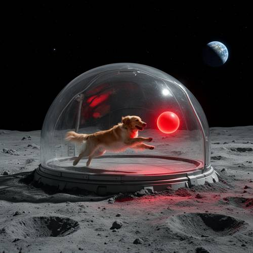

Entity Layout — In the transparent dome base on the lunar surface, a golden retriever
In the transparent dome base on the lunar surface, a golden retriever chases a red ball of light floating in front of it.

Direct — one call, no iteration

Continuum — Qwen3.8-27B + FLUX.2-dev
Judge — Direct
FAILEntity Layout - Three-Dimensional Space — In the image, there is a red ball that is glowing, positioned in front of the dog. However, the ball is not floating freely; it is visibly attached to the top of a gray pole that is fixed to the ground inside the dome.
PASSWorld Knowledge — The image accurately depicts a lunar surface outside the transparent dome. The ground is gray, dusty, and has craters and rocks, consistent with the appearance of the Moon's surface. The background is a black, star-filled sky.
Judge — Continuum
PASSEntity Layout - Three-Dimensional Space — The image shows a golden retriever in mid-air, oriented towards the right. A glowing red sphere is positioned in front of the dog, also in mid-air, consistent with a 'red ball of light floating in front of it'.
PASSWorld Knowledge — The image depicts a gray, dusty, and cratered terrain under a black, star-filled sky with the Earth visible in the distance. This is a common and recognizable representation of the lunar surface.
What the agent did
Thinking
The user is asking for the following image: on the lunar surface there's a base with a transparent dome, and inside it a golden retriever is chasing a red sphere of light floating in front of the dog. Let me generate this with flux2-dev. Thinking about the visual details: - Lunar surface: gray regolith, craters, starry black sky, and in the distance maybe Earth in the sky - Transparent dome base: a habitat with a glass dome - Golden retriever inside, mid-stride, chasing after a glowing red ball of light floating in front of it - The red sphere of light should look like a glowing orb Let me write the prompt: "A transparent glass dome habitat on the gray lunar surface, a golden retriever inside mid-leap, chasing a bright red glowing sphere of light floating in front of it, lunar regolith terrain with craters visible through the dome, Earth in the black starry sky, cinematic lighting, the red glow illuminating the dog's fur and the interior of the dome" Let me generate that.
Step 1 — `generate_image`
{
"prompt": "A transparent glass dome habitat sitting on the gray lunar surface, craters and regolith terrain visible around its base, black starry sky with a small Earth far in the distance. Inside the dome, a golden retriever is mid-leap, body stretched out, chasing a bright glowing red ball of light that floats in front of the dog at nose height. The red orb emits a warm red glow that lights up the dog's fur and casts red reflections on the glass dome. Cinematic sci-fi scene, photorealistic, dramatic lighting.",
"model": "flux2-dev",
"width": 1024,
"height": 1024
}
Result img_0
Thinking
The image is pretty good. Let me check against the prompt: - Transparent dome-shaped base on the moon's surface ✓ - Golden retriever ✓ (leaping, chasing) - Red sphere of light floating in front of the dog ✓ - The dog is chasing it — the dog is mid-leap, facing the red orb ✓ Minor observations: - The red orb is floating slightly ahead of the dog — good. - The dog is facing the orb — yes, leaping toward it. - There's a red glow inside the dome, and there's also a bit of red light leaking from under the dome onto the ground, but that's fine / it's physically plausible as a reflection. - Composition is good. Let me check the details with inspect_region — the dog's pose, whether it looks like a golden retriever. The image seems fine. It might be worth zooming in to check the dog's quality and the orb. Honestly, the image already matches the prompt well. Let me do a quick inspection of the dog/orb region to make sure there are no artifacts.
Step 2 — `inspect_region`
{
"image": "img_0",
"roi": "the golden retriever and the red glowing ball",
"padding": 0.1
}
Thinking
SAM didn't match. Let me try using a rectangle instead. The dog is around x 250-620, y 450-650. The ball is at x 620-700, y 430-530. Let me crop a region covering both.
The dog looks like a good golden retriever, mid-leap, front paws extended forward, facing the red glowing orb. The orb is floating in front of the dog. The dog's pose looks natural and dynamic. There's a red glow from the orb illuminating the fur. Everything matches the prompt: - Transparent dome-shaped base on the lunar surface ✓ - Golden retriever ✓ - Chasing the red ball of light floating in front of it ✓ The image is good quality. Mark this as the best and stop. No need to over-edit.
Model
The close-up confirmed a strong result: the golden retriever is mid-leap, with its body fully stretched out, facing the glowing red sphere of light floating just in front of it. The red light is naturally illuminating its fur and casting a glow inside the dome. All the elements of the prompt are present and correct — the transparent dome-shaped habitat on the cratered lunar surface, the Earth in the black starry sky, and the dog chasing the red light.
Step 4 — `mark_best`
{
"image": "img_0",
"reason": "All prompt elements present and correct: transparent dome base on the lunar surface, golden retriever mid-leap chasing a floating red ball of light in front of it, with the red glow realistically lighting the dog and dome interior."
}
Thinking
The image is marked as best. All elements of the prompt have been satisfied. Time to stop and report back to the user.
Model
Done! The image is complete and marked as the best result: - **Lunar surface** — gray regolith with craters, a black star-filled sky, and Earth visible in the distance - **Transparent dome base** — a glass habitat dome with a metallic rim, with the cratered terrain and lunar dust visible around its base - **Golden retriever** — caught mid-leap with body fully extended and front paws reaching forward - **Red ball of light** — floating at nose height directly in front of the dog, its warm glow illuminating the dog's fur and casting red reflections inside the dome The close-up inspection confirmed the dog's pose, anatomy, and the floating orb are all clean, so no further edits were needed.